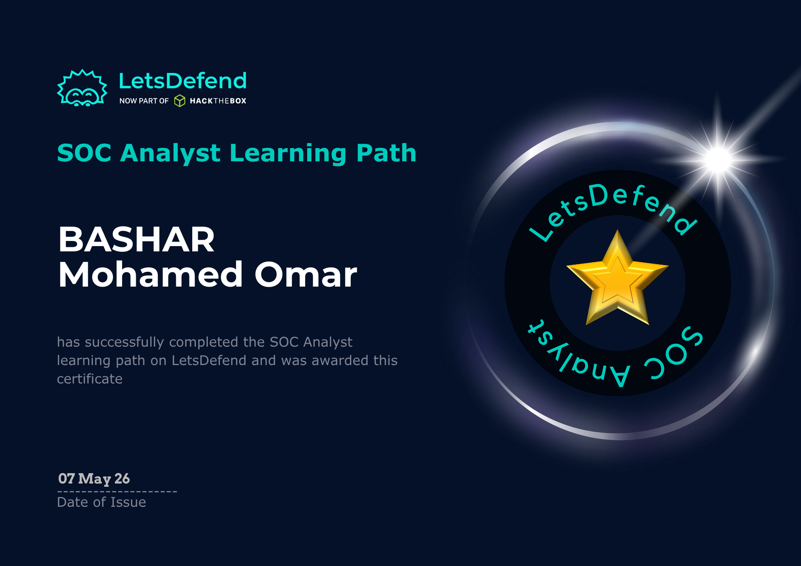
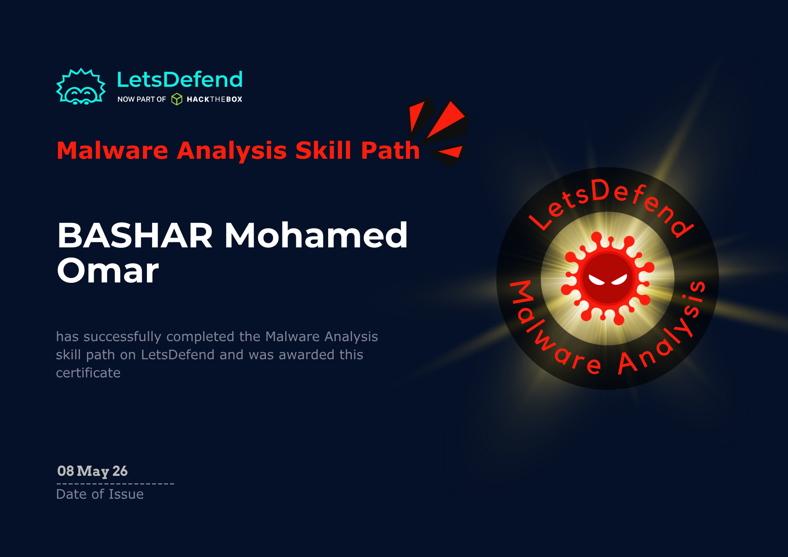
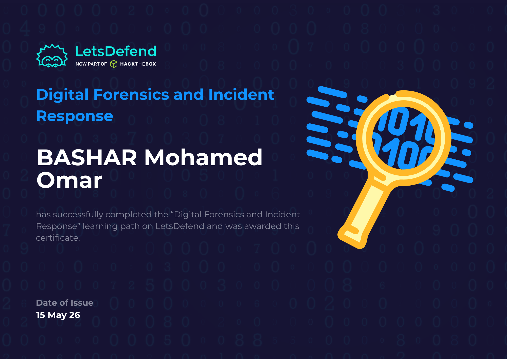
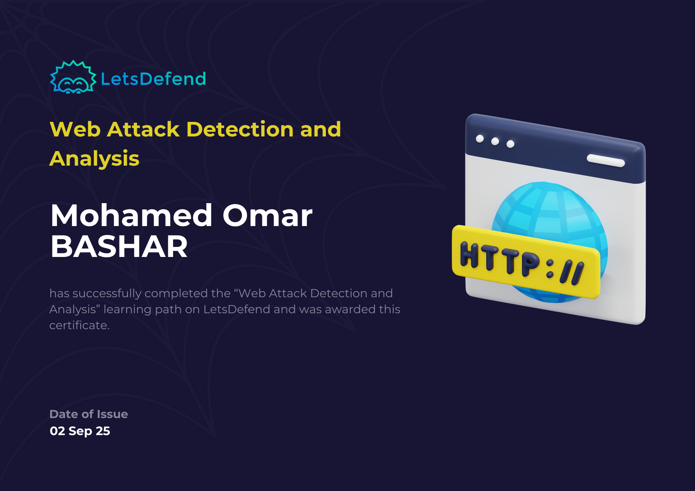

ESC / CLICK TO CLOSE
I build infrastructure and secure it. Linux and Windows environments, Active Directory, network configuration, scripted automation — and the detection, monitoring, and incident response layer on top of all of it. Based in Kigali, Rwanda.
I'm a final-year Computer Science student at the University of Kigali with a specific focus: building systems that are both functional and defensible. Most people end up on one side of that line — sysadmin or security. I've deliberately built across both.
On the infrastructure side, I configure and manage Linux and Windows environments, deploy Active Directory with Group Policy and DNS, build multi-topology networks, and automate operational tasks with Bash, Python, and PowerShell. These aren't concepts I've read about — they're documented in the labs below.
On the security side, I run a Wazuh SIEM stack, write custom detection rules, triage alerts, analyse malware in isolated sandboxes, and work through SOC scenarios on LetsDefend and HackTheBox. The goal isn't just to detect threats — it's to understand the infrastructure well enough to know what normal looks like before something breaks it.
Long-term, I'm drawn toward OT/ICS security — securing the infrastructure that actually runs physical systems. That's where the sysadmin-defender crossover matters most.
Deploy and manage Linux and Windows Server environments. User and group management, service configuration, system monitoring, log inspection, and hardening across both server and desktop contexts. Hands-on with Active Directory Domain Services, DNS, and Group Policy enforcement.
Configure and troubleshoot multi-topology networks: router and switch setup, FLSM/VLSM subnetting, DHCP, NAT, SSH, and Telnet. Diagnosed and resolved Layer 2/3 faults across live and simulated environments during internship at Natcom Rwanda.
Write Bash, Python, and PowerShell scripts for operational tasks: backup automation, system monitoring, scheduled jobs, and security hardening utilities. Scripts are documented and available in the Scripting Hub project below.
Deploy and operate Wazuh as a full XDR/SIEM stack. Write custom detection rules, ingest agent events, correlate logs, and triage alerts. Built a full attack-to-detection pipeline for SSH brute force (MITRE T1110) with documented evidence chain.
Build isolated VirtualBox/VMware sandboxes to safely detonate and observe malware behaviour. Document process trees, network artifacts, registry changes, and indicators of compromise. Trained extensively on LetsDefend's Malware Analysis Skill Path.
Identify and analyse web-based attack patterns in live SOC environments. Trained on IDOR, Log4Shell, Spring4Shell, Text4Shell, JWT, and SAML-based exploits. Certified in Web Attack Detection & Analysis via LetsDefend.
Full attack-to-detection pipeline: simulated SSH brute force with Hydra on Kali, captured host-level evidence in auth.log, and monitored the attack through a custom Wazuh SIEM dashboard with 5 screenshots documenting the complete SOC workflow.
Designed and deployed a multi-OS enterprise lab environment using Windows Server and Ubuntu. Configured Active Directory Domain Services, DNS, and centralized identity management (OUs, users, groups). Applied Group Policy for system configuration and security, and validated authentication across domain-joined machines.
Centralized hub of system administration and cybersecurity automation scripts. Includes tools for backup automation, system monitoring, security hardening, and operational utilities — all developed through hands-on Linux and Windows practice.
Hands-on infrastructure internship at a national telecoms provider. Configured multi-device network environments from physical cabling through Layer 3 routing, with full responsibility for connectivity validation before handoff.




Seeking a junior sysadmin or entry-level SOC analyst role. Open to opportunities in IT infrastructure, secure system operations, or blue team environments.